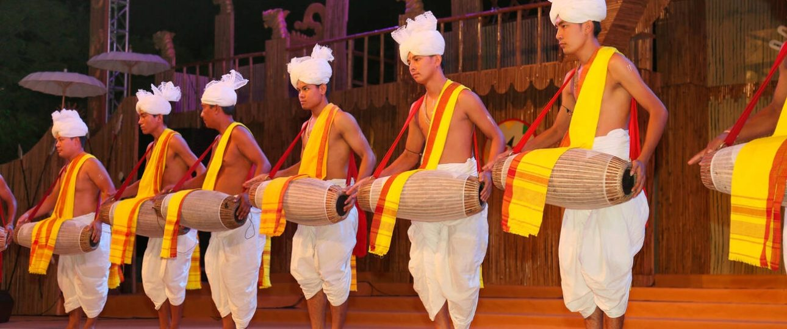

Welcome to Manipur!

Manipur, located in northeastern India, is renowned for its rich cultural heritage, vibrant traditions, and scenic
landscapes. The culture of Manipur is a blend of indigenous traditions, dance, music, and arts, primarily
influenced by the Meitei community along with the various tribal groups.
Festivals play a central role in Manipur's cultural life. Yaoshang, the Manipuri version of Holi, is celebrated
with fervor and features traditional Thabal Chongba dance. Lai Haraoba is another significant festival dedicated
to traditional deities, involving rituals, music, and dance that showcase the mythological origins of the Meitei
people. The Sangai Festival, named after the state animal, is a cultural extravaganza that highlights the region's
arts, crafts, cuisine, and sports.
Manipuri cuisine is characterized by its simplicity and use of fresh, local ingredients. Staple foods include
rice, fish, and vegetables. Popular dishes like Eromba (a mashed vegetable dish with fermented fish), Singju (a
spicy salad), and Chamthong (a vegetable stew) reflect the state's culinary diversity. The cuisine is known for
its unique flavors, often achieved through the use of fermented ingredients and aromatic herbs.
Music and dance are integral to Manipur's cultural expression. Manipuri dance, especially the classical Ras Leela,
is renowned for its grace and storytelling, depicting episodes from the life of Lord Krishna. Other traditional
dance forms include Pung Cholom, a dance performed with drums, and Nupa Pala, a ritualistic dance. Folk music,
characterized by traditional instruments like the Pena, accompanies these dance forms, creating a harmonious
cultural performance.
Manipur's natural beauty, with its rolling hills, verdant valleys, and serene lakes, provides a picturesque
backdrop for cultural and eco-tourism activities. Loktak Lake, the largest freshwater lake in the region, is
famous for its floating phumdis (islands) and is a major tourist attraction. The Keibul Lamjao National Park, the
world's only floating national park, is home to the endangered Sangai deer.
The state's handicrafts, including hand-woven textiles, bamboo and cane products, and traditional jewelry, reflect
the artistic skills and cultural heritage of Manipuri artisans. The intricate designs of Manipuri shawls, Phanek
(traditional skirts), and pottery are highly valued and showcase the community's craftsmanship and creativity.